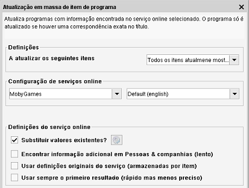

Atualização em massa
Caminho de menu: Ferramentas > Atualização em massa
Esta ferramenta permite-lhe atualizar a informação armazenada no Data Crow com a informação
(atualizada) dos seus ficheiros (ex. MP3's) e/ou usar um serviço online para encontrar informação em falta.

A disponibilidade do serviço online e/ou a reanálise dos ficheiros dependem do módulo selecionado. A
atualização em massa pode até nem estar de todo disponível para o módulo selecionado.
Pode usar uma combinação entre reanalisar ficheiros e procurar online para atualizar todos os itens mostrados na vista.
Definições
Selecione quais os itens a atualizar. As opções são estas: "Atualizar os itens atualmente mostrados" e "Atualizar só
os itens selecionados".
Configuração do serviço online
A configuração do serviço online é a mesma que para a procura online normal. As definções e opções
são explicadas aqui.
Usar definições originais do serviço
A informação do serviço é armazenada item, após o item ter sido encontrado ou atualizado por um
serviço online. A informação pode ser reutilizada para atualizar o item. Isto é conveniente quando quer
ter a certeza que a informação está sincronizada com a origem.
Configuração da análise de ficheiros
Indique se quer a informação relida dos ficheiros (tais como ficheiros de música ou vídeo).